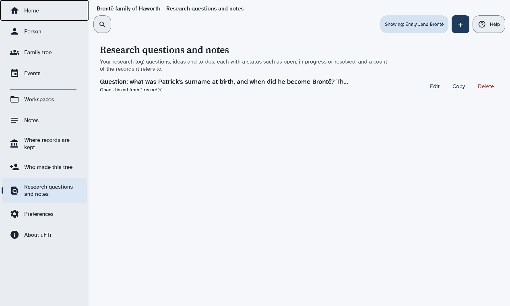

BetaThis is a new service – your feedback will help us to improve it.
Add a research note
Write down a question you are trying to answer, with a status, and tie it to the people it is about.
About this task
A research note is a question, an idea or a job to do. It has a status, such as open, in progress or resolved. This page adds the question of Patrick Brontë's surname.
Procedure
Choose Research questions and notes in the menu.
The page lists your research notes. Each shows its first words, its status and how many records it is linked from.
Choose +, then choose Research note in the part named Add to the workspace, then choose Add.
The list scrolls. Turn the mouse wheel with the pointer on it to find the part.
A form opens.
In Note, type your question.
This box is needed. For example, Question: what was Patrick's surname at birth, and when did he become Brontë? The sources give Brunty and Prunty. Still open: look for the parish register.
In Status, choose Open.
Under People it is about, choose Add row, then choose Set… under Person.
A window named Existing person opens, with a box for a name.
Type Patrick Brontë, then choose the line with his years, 1777–1861, then choose Done.
The tree has more than one Patrick. The years show which one is which.
Choose Save.
The page Research questions and notes lists the note by its first words. Under them it says Open · linked from 1 record(s).

Results
The question is in your research log, tied to Patrick. Each note in the list has Edit, Copy and Delete.
Good practice: write the question down before you start to answer it. A question can stay open until you find the evidence.